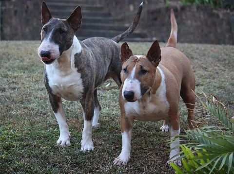

Buffy
Katt
Cordelia
Katt
Holly
Hund
Holly är en chihuahua-tik på 9 år och som bott hos mig sedan hon var 12 veckor. Planen var att tävla i utställning med henne
och senare ta valpar, men då hennes psyke är ganska svagt och hennes munhälsa föfärlig så ändrades den planen och hon fick nöja sig med att vara en
kär familjemedlem och min vapendragare istället. Vi brukar träna lite lydnad när hon känner sig sugen på det och jag försöker träna mycket kontakt och självförtreondestärkande övningar med henne
för att hon ska bli starkare i psyket och våga mer, vi har kommit långt och hon är mycket modigare nu än någonsin.
Hollys favoritsysselsättning är att vara med mig, tugga ben och jaga gräshoppor. Det hon gillar minst är att klippa klorna, åka till veterinären och att gå ut under vinterhalvåret.
Nästa planerade djur
Hund
Jag och min sambo har diskuterat en ny familjemedlem i några års tid men det har aldrig varit läge
för att välkomna en hem. Men vi känner att det börjar bli dags nu i och med att jag studerar hemifrån och han
kör lastbil så kommer det alltid vara någon av oss som kan ha hunden med sig så den slipper vara ensam längre stunder.
Vad för ras?
För mig är valet av ras busenkelt: Standard Bullterrier. För mig finns inget annat alternativ, även om mina föräldrar
försökt få in mig i retrievervärlden så stannar min lojalitet för rasen kvar. Min sambo är dock inte lika förtjust i mitt val
utan han röstar mer på en staffe eller en till chihuahua.
Vi har även gått i tankarna om att adoptera en hund som behöver nytt hem men hittills har vi inte hittat någon som passar
oss, vår livsstil, våra intressen och våra andra djur. Men det finns helt klart med på kartan om vi skulle hitta någon
som matchar oss.
Intressen och mål med hunden
Mitt främsta intresse och mål med en ny hund är, förutom att jag känner att vår familj har gott om
plats för ännu mer kärlek, så ligger mitt intresse vid lydnad och ett nyvunnet intresse för rallylydnad. Även viltspår och personsök är saker jag
planerar att träna med hunden.
Tyvärr delar inte Holly samma intresse som mig och därför längtar jag till den dagen jag kan
få en träningskompis att dela det med.
